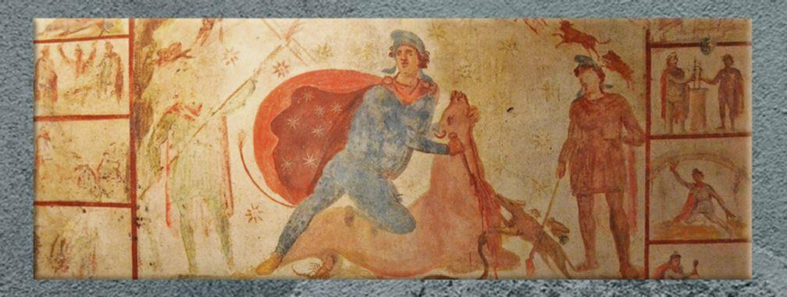
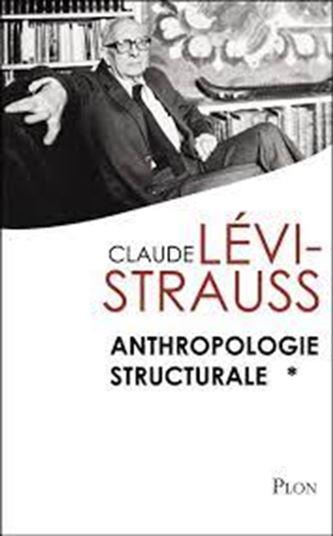
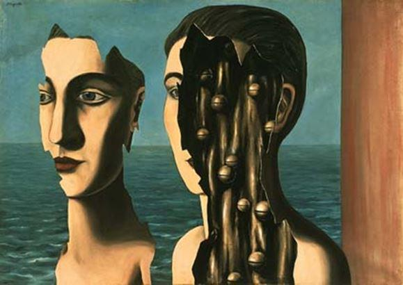
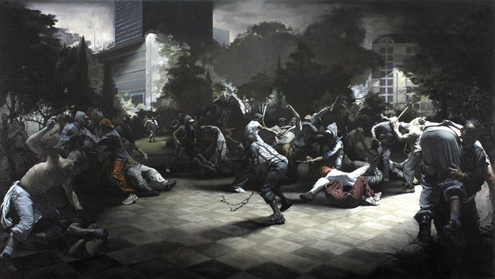
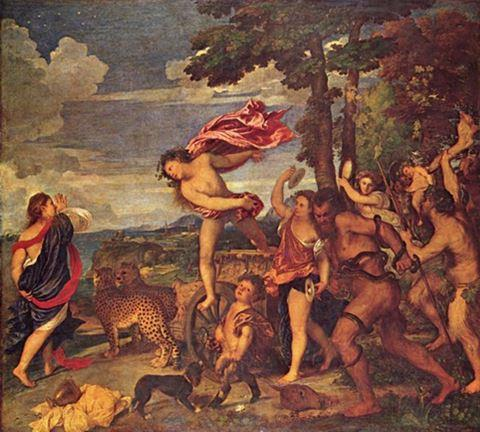
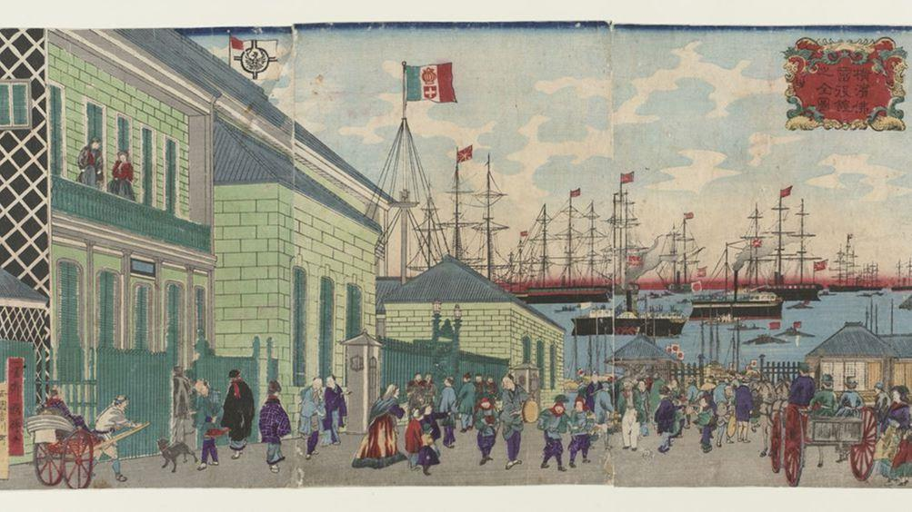

Il est important de s’attacher aux mutations en cours. Et reconnaître que la fin D’UN monde n’est pas la fin DU monde. Il convient donc de penser le changement de paradigme en cours. Ce dernier est d’ailleurs peu pris en compte par les intellectuels français. C’est bien sûr différent dans d’autres pays. On quitte la « Galaxie Gutenberg » pour un autre univers qui reste à évaluer et à apprécier. Comme tout changement de paradigme, la galaxie Internet (la cyber culture sous ses diverses modulations), représente une mutation fondamentale, c’est cela que, faute de mieux, on peut nommer : postmodernité.
Ce qu’il est convenu d’appeler la modernité, du XVIIème à la moitié du XXème siècle, avait pour caractéristique essentielle de vouloir/pouvoir tout maîtriser (« L’homme maître et possesseur de la nature » cartésien). Pour la postmodernité naissante, ancrée dans la galaxie Internet, ce sentiment de maîtrise : économique, sociale, politique, est saturé.
Une expression de Teilhard de Chardin me paraît intéressante. Il parle de noosphère. La noosphère est une « sphère de l’esprit », de l’esprit collectif. Ce n’est plus ce à quoi nous avait habitués la modernité privilégiant le fameux « cogito ergo sum », je pense donc je suis. La pensée commune, les idéologies « tribales » : forums de discussion, réseaux sociaux, sites communautaires, voilà autant d’aspect de la mutation en cours.
Tout à coup, on voit bien que l’individu ne pense pas mais « qu’il est pensé », « on » le pense. Ce passage du « je » au « nous » est pour moi un changement fondamental dans notre société. Il convient de le constater et de l’analyser.
Or nos instruments théoriques ne sont pas forcément les meilleurs pour le faire. Mon hypothèse est qu’il y a dans cette mutation technologique quelque chose qui va rejouer des choses anciennes. En effet, on n’ose pas trop le dire, mais l’essentiel de ce qui se passe sur internet concerne les préoccupations philosophiques, religieuse, érotiques, toutes choses « archaïques » (c’est à dire premières, fondamentales). Il s’agit là d’un retour qui mérite attention. Très précisément en ce qu’il met l’accent sur un indéniable « idéal communautaire ».
Pour ne prendre qu’un exemple parmi bien d’autres : un chercheur du CEAQ ( Centre d’Étude sur l’Actuel et le Quotidien, www.ceaq-sorbonne.org) faisait une recherche sur la musique techno développée par un petit groupe à Albi. Il note que, Internet aidant, ce groupe a fait la connaissance d’un autre petit groupe de Bratislava, qui faisant le même type de musique techno. Reprenant mon hypothèse concernant le « temps des tribus »(1988), il montre comment des relations « tribales » d’hospitalité et d’échanges multiples vont s’organiser entre Albi et Bratislava.
C’est à partir de là que j’ai proposé ma définition de la postmodernité : « synergie de l’archaïque et du développement technologique ». Ce type d’expérience rejouant, en effet, les échanges pouvant exister dans les sociétés primitives ou médiévales peut être caractérisé par un « enracinement dynamique ». Pour le dire en termes imagés non plus la flèche du temps progressiste, ni le cercle réactionnaire, mais la spirale de la « progressivité ».
On peut aussi illustrer la « reliance » existant entre ces deux groupes de musique techno, par ce qui se passait, à cette époque par bien des aspects, semblable à la nôtre : le IIIème ou IVème siècle ; ce que l’on appelait, lorsqu’on n’avait pas peur des mots : le « décadence romaine ». Il faut, en effet, analyser les mutations sur la longue durée. C’est pour cela que la vraie pensée prend du temps.
Dans la décadence romaine, donc, on voyait tomber quelque chose, puis émerger autre chose. Il y avait à l’époque trois cultes essentiels : Orphée, Mythra, le Christianisme. Le Christianisme était plutôt la religion des « gens de peu ». Mythra, par contre, était celle des « gens importants ».
Et les historiens des religions, par exemple Renan, montrent que le Christianisme va « sécréter » une idée intéressante : le dogme de la « communion des saints ». Le petit groupe chrétien de Milan était uni, en esprit, à celui de Lutèce, de Lyon, de Rome, de Narbonne, etc. Et c’est cette idée qui va balayer les deux autres cultes. On peut, ainsi, dire qu’internet, est la « communion des saints postmodernes ». Les microgroupes d’Albi et de Bratislava sont éloignés dans l’espace mais unis spirituellement dans une préoccupation commune. Voilà ce qui est en train de recréer du lien social. C’est cela la mutation de fond sociétale : les idées sont collectives et notre temps voit la reviviscence, après la parenthèse (époque) moderne, d’un « relationnisme » archétypal. Ce qui prévaut, est non le « primum individuationis », mais bien le « primum relationis ».
Les divers observateurs sociaux s’accordent sur le fait que les temps modernes ont débutés il y a trois siècles et demi. Certaines évaluations estiment qu’un cycle dure entre trois siècles et trois siècles et demi. C’est cela la longue durée : XVIIème siècle affirmation du « cogito » cartésien, XVIIIème siècle développement de la philosophie des Lumières, puis le XIXème qui est le grand siècle de la modernité et qui voit la formalisation des institutions sociales, ce que les travaux de Michel Foucault ont bien montré. Ce modèle a bien fonctionné jusqu’en 1950. Par après commence sa décadence, et donc l’émergence de l’époque postmoderne. Puis-je, à cet égard, rappeler qu’en grec le mot époque veut dire parenthèse. Lorsqu’une parenthèse se ferme une autre s’ouvre ! Contre le linéarisme propre au progressisme moderne, cela nous oblige à penser, avec rigueur, le devenir cyclique du monde : le « corsi e recorsi » de G. Vico !
Puis-je rappeler une remarque de Lévi Strauss : « L’homme a toujours aussi bien pensé ».1 Ce qui met l’accent sur des structures invariantes. Lévi-Strauss a développé comme Gilbert Durand2 un chemin de pensée privilégiant l’analyse des archétypes invariants. Ensuite seulement viennent les modalités ou modulations de ces structures. Chaque invariant prend telle ou telle forme à tel moment. C’est ainsi, que tout au long de la Modernité ce qui être privilégié c’est la Raison et ses multiples modulations. Les grands systèmes à partir de Descartes ont développé l’idée que l’homme est maître et possesseur de la nature. A partir du XIXe siècle, avec la naissance des grands systèmes sociaux, cette pensée rationnelle va aboutir à une action politique. Ainsi est née la volonté de changer le monde, dont les « théories de l’émancipation » sont de bonnes illustrations.
Il y a eu ce grand moment où ce qui était important dans la pensée c’était la raison. Il est d’autres moments où l’intelligence (intelligence vient de intelligere : ce qui rassemble les choses éparses, les morceaux) ne met pas seulement l’accent sur la raison, mais sur l’entièreté de l’être. Hypothèse que j’ai développé dans mon livre : Eloge de la raison sensible3. Il s’agit là d’un oxymore soulignant que le rationalisme moderne est, avant tout, schizophrénique. Il coupe, dissèque, analyse ! C’est uniquement le cerveau qui est sollicité. Alors qu’à d’autres moments – c’est ce qui est en jeu en ce moment avec la noosphère – on revient vers une démarche unissant la raison et les sens. Nous retrouvons une pensée de Joseph de Maistre : la droite raison et le bon sens réunis. La « libido sciendi », ce désir du savoir, entrant en connexion avec la « libido sentiendi », la capacité de sentir !
J’aime beaucoup l’idée de connaissance. Il existe une ambiguïté sur son étymologie : cum nacere ou cum nocere. Naître avec, ou savoir avec. Il n’est pas important de trancher. Ce qui est intéressant c’est ce « penser avec » et plus profondément encore, c’est le cum nacere : je nais avec ce que je décris, ou le cum nocere : je connais avec ce que j’appréhende. La grande idée cartésienne consistait à dominer le Monde. Avec la notion d’entièreté, au contraire, se développe l’idée d’un feed-back, d’une réversibilité. Mon regretté ami Jean Baudrillard, avait bien montré le mécanisme d’interaction qui est le propre des technologies contemporaines. On peut dire ainsi que le monde contemporain en rejouant l’intelligence collective retrouve une connaissance anthropologique d’origine archétypale.
Baudelaire appelait Dieu : « le plus grand des paranoïaques ». Il est, peut-être, possible d’appliquer, d’une manière humoristique, à la modernité cette étiquette. Et ce en rappelant le sens étymologique du mot : para noiein (penser par en haut). C’est l’affirmation de la verticalité. Les intellectuels sont devenus les avatars de la déiité et il y a dans l’attitude de l’intellectuel purement rationnel de la paranoïa. L’avatar est l’intellectuel qui se prend un peu pour un petit dieu : sachant comment l’on doit penser et l’on doit agir : retour de l’inquisition. C’est cela la « logique du devoir être ». Et l’agressivité, voire la méchanceté, régnant dans le tout petit monde universitaire, ne sont que les conséquences de la paranoïa. Ce n’est pas ma sensibilité théorique . Il me semble qu’il faut faire preuve de plus d’humilité, et reconnaître qu’il y a de l’humus dans l’humain. Avoir l’humilité d’accepter l’humus dans l’humain.
C’est, d’ailleurs, en poussant jusqu’au bout cette raison paranoïaque que l’on aboutit, pour reprendre une expression de Heidegger, à la « dévastation du monde », qui n’est que la conséquence logique du mythe du progrès. C’est à l’opposé d’un tel progressisme que j’ai essayé de développer l’idée de la « progressivité », montrant en quoi raison et sens peuvent cohabiter ensemble ( cf. La violence Totalitaire, 1979) .
Et c’est bien à l’encontre d’une telle « paranoïa » que ce développe la vitalité juvénile de la jeunesse d’aujourd’hui. Ils n’ont pas le même type de culture que moi, c’est évident, mais en même temps ils ont une culture que je ne peux pas méconnaitre. Je donne un exemple : il y a 10 ans, quand je faisais mon cours à l’amphi Durkheim il s’agissait d’un cours magistral, « surplombant ». De nos jours ce n’est plus possible car les auditeurs sont avec leur micro-ordinateur et peuvent rappeler, en temps réel, que le professeur se trompe par exemple sur telles dates ou sur la justesse de telle citation de Hegel etc…. Là c’est une forme de richesse, qui est celle de l’horizontalité. À la « loi du Père est en train de succéder la « loi des frères » ou celle des « pairs ». Une telle interactivité devait purger les intellectuels, de cette extraordinaire prétention du savoir surplombant.
C’est ce que montre le retour des « tribus ». Je précise qu’il s’agit là d’une métaphore , car la tribu postmoderne était assez éloignée des tribus telles que les analysent les ethnologues. Pour eux, à juste titre, les tribus sont inscrites dans le temps long, le sol, le sang etc. La métaphore (et non de concept) de tribu postmoderne consistait à rendre attentif au fait que la société unfiée, la République Une et indivisible, voire le fameux « contrat social », tout cela était saturé ! Puis-je rappeler que lorsqu’on commence à parler, au XVIII em siècle de « contrat social », c’est pour décrire, tout simplement, un être-ensemble rationnel. Ainsi par exemple, quand les Japonais ont cherché à traduire les philosophes français au début du XXe siècle, ils avaient du mal à traduire le mot » social » car la réduction du vivre –ensemble à sa seule rationalité leur était étrangère.
On voit, au travers de l’expression « contrat social », à quel point l’Europe en général et la France en particulier ont pu être les créatrices de la modernité. C’est à dire d’une société Une . Ce qu’avait bien formulé Auguste Comte lorsque, parlant de la société, il dit « : « reductio ad unum ». Par après, c’est au bout des baïonnettes des soldats, dans les cales des bateaux des marchands et avec l’appui des missionnaires que les Européens ont transporté au monde entier cette idée de d’une société Une et du Contrat social qui en est l’expression.
Or il se trouve que depuis quelques décennies on assiste au retour du sentiment d’appartenance, à l’importance de l’émotionnel et des affects en général. C’est pour cela que la métaphore de « tribu » me semble opportune. C’est ce que j’ai analysé dans mon livre Le temps des tribus4. Temps des tribus s’appuyant sur le développement technologique !
Mais que peut-on entendre par « tribu » ? Il s’agit, tout simplement, du partage d’un goût. Que ce soit des goûts sexuels, musicaux, religieux, sportifs, consommatoires etc… Et à la différence avec l’ethnologie classique, la personne plurielle virevolte d’une tribu à l’autre. Comme en amour, on peut avoir des sincérités successives. Et suivant la tribu à laquelle on s’agrège. Dès lors la société ne peut pas être « réduite à l’unité » mais, au contraire, se présente sous la forme d’un patchwork. Ainsi la « res publica », la chose publique, devient une mosaïque cohérent les formes diverses que revêt le vivre-ensemble. De même puis-je rappeler la définition, que j’ai déjà indiqué, de la postmodernité : synergie de l’archaïque et du développement technologique. Avec les réseaux sociaux, les sites communautaires etc. on voit se réaliser une de conjonction de la cyberculture et du partage d’un goût. Voilà pourquoi je parle de tribalisme. C’est en ce sens que le virevoltement d’une tribu à une autre est une marque de la postmodernité. Celle-ci a comme « caractéristiques essentielles » : l’hédonisme, le tribalisme et le nomadisme. Ce sont des archétypes que l’on voit revenir. Ainsi, à titre d’exemple, on peut rappeler que 70% du trafic internet est le fait de sites religieux, érotique, philosophique, ou lié au concept de développement personnel.
Tout comme le tribalisme, le nomadisme repose sur le fait que l’on « surfe », l’on passe d’un groupe à un autre, d’une « tribu » à une autre. C’est cela l’acivité essentielle repérable sur internet. On peut traduire cela, en reprenant une idée d’Heidegger, par la liaison du poète et du philosophe, Ces deux sommets ne sont pas si éloignés l’un de l’autre. Les internautes vivent cette conjonction, là où nous l’avions auparavant « séparée ». La pensée moderne est une pensée de la séparation. Si je reprends un concept de Freud, il s’agit de la « spaltung », de la coupure. Cette séparation ne faisait que traduire ce qui est la première phrase de la Bible : « Dieu sépara la lumière d’avec les ténèbres ». On a là, ab origine cette idée de séparation avec le culte de l’efficacité, de la science. D’où la dychotomisation du monde : culture/nature, corps/esprit, matériel/spirituel etc…
Actuellement, une conjonction est en train de se faire. Le fait que l’artiste et le philosophe soient liés organiquement ne m’étonne pas. Sur internet on retrouve alors, « de facto » cette conjugaison. Celle, en particulier perceptible chez les jeunes générations, d’un corporéisme mystique, d’un matérialisme spirituel et autres oxymores de la même eau ! Puis-je revenir sur une de mes obsessions théoriques ? qui est la saturation de l’individu ou de l’individualisme épistémologique ayant caractérisé la modernité. En effet, la tribu c’est quand le « je » s’exhausse en « nous ». Il est frappant de voir comment nombre d’observateurs, de journalistes, continuent de répéter cette petite phrase témoignant de la sottise ambiante : « compte-tenu de l’individualisme contemporain » etc. Alors qu’il suffit de se promener deux minutes dans la rue pour voir que les jeunes sont toujours en relation, technologie aidant et numérique, avec d’autres. Ce soi-disant individualisme est une idée convenue, une incantation quelque peu obsolète.
Il s’agit d’une « invention » moderne. On peut dater la naissance de l’individualisme avec le cogito cartésien affirmant le paradigmatique : « je pense donc je suis dans la forteresse de mon esprit ». Ensuite vient la Réforme protestante. La Bible étant traduite en langue profane et grâce à l’imprimerie ( la galaxie Gutenberg), chacun peut avoir accès à son Dieu. Et ce directement, sans la médiation de clercs patentés interprétant le texte sacré. Enfin, à l’origine de cet individualisme, il y a la philosophie des Lumières. Un bon exemple en est l’Emile5 de Jean-Jacques Rousseau. Roman d’éducation reposant sur l’idée que : l’animal que l’éducation a réussi à humaniser, ce petit enfant, barbare, qui a été civilisé, est devenu un individu autonome ». « Auto-nomos » veut dire qu’il est sa « propre loi ».
Voilà les trois moments de l’« invention » de l’individu au début de la modernité. Le « contrat social » prend la suite : étant capable de faire ma propre histoire et je vais « contracter » avec d’autres individus « autonomes » pour faire l’histoire du monde ». Cet individualisme est le squelette du corps social, le pivot à partir duquel se structure la prévalence de la Raison, le « contrat social » et le Progrès. C’est ce développement conduisant à l’émergence de l’individualisme qui aboutit au fameux « principe de réalité » dont la logique est économique : à un enfant voulant faire de l’art on répond « fais d’abord ton droit », ou « ta médecine ». Voilà le principe de réalité : ne se préoccuper que d’une activité sérieuse apportant un salaire conséquent ( ou supposé tel). L’individualisme a ainsi réduit le Réel à sa dimension économique, politique ou sociale. Le Réel est beaucoup plus riche : il est gros de fantasmes, de poésie, de fantasmagorie, de rêve… Ce dont la « personne » ( persona : masque) est l’expression.
C’est cela que pressent, intuitivement Rimbaud. Dans le « je est un autre »6 rimbaldien, nous redécouvrons l’idée de personne : « je suis ceci et cela » et non pas « ou…ou ». L’individu est la cause et l’effet du « principe de réalité », alors que la personne trouve son expression dans le Réel, c’est à dire dans le fait de pouvoir rêver, fantasmer, penser etc... Internet favorise, bien entendu, ces fantasmes et fantasmagories.
J’ai, dans ma thèse d’État, montré l’importance des rites et des mythes ( cf « La Conquête du présent, 1979). Ce n’était pas à la mode à l’époque. J’exposais pourtant des choses simples de la culture populaire. Par exemple en allant au travail on s’arrêtait pour boire, au bistrot le « petit blanc du matin », ou le café. On stoppait, ainsi, un moment, le temps qui passe. Certes, on perdait sa vie à la gagner, mais le rituel du « petit blanc » était une manière d’homéopatiser cette mort de tous les jours qu’est le travail.
Cela a quelque peu disparu car l’on assiste à une asepsie de la vie sociale. Mais d’autres formes de rites naissent. On est en présence d’une religiosité quotidienne. Rituel religieux qu’il ne faut pas réduire dans le sens de la liturgie classique. Sur internet nous sommes face à une multitude de rites comme. Comme jadis, dans certains cafés, on ne peut pas entrer seul, il faut être initié. Il y a des rites de passage. On ne peut être intégré que si l’on sait dire ce qu’il faut dire. Le rite, c’est ainsi ce qui rend visible une force invisible, en l’occurrence la force de la tribu, du groupe, du site communautaire. Ces rites, que le « rouleau compresseur du rationalisme avait évacué, sont en train de ressurgir. En effet, le rite met en jeu l’entièreté de l’être et pas simplement l’intelligence purement rationnelle. Il représente une forme instinct intuitif. Il s’agit de savoir « sentir » des choses. Si nous ne suivons pas ces rites, nous sommes exclus de la tribu et du groupe du réseau social. Les réseaux sociaux témoignent d’un tel processus !
Le rite digital conforte le champ social. Il rend visible ce qui est invisible. De ce fait, il ralentit la mort, la repousse. En effet, cette répétition, cette redondance que l’internaute y trouve lui fait vivre un instant éternel. Stricto sensu : non plus une éternité à venir, dans une paradis céleste ou terrestre, mais , par la « bonne occase », dans l’opportunité, une éternité vécue au jour le jour . Dans les réseaux sociaux les rituels retrouvent une force et vigueur indéniable ! Allons plus loin, on peut dire, pour paraphraser L.Bloy, que « tout est admirable ». Après on observe comment cela s’exprime . Ainsi, dans un numéro des « Cahiers Européens de l’Imaginaire » ( CNRS Éditions. 2014) on traitait de la « Techno Magie ». En montrant comment, paradoxalement, la technique « re-magifie » le monde. Nous avons par rapport à ces objets techniques un rapport magique comparable à celui des tribus primitives. Par exemple, c’est en fonction de la possession ou non de telle marque de smartphone que l’on peut être , ou pas, intégré à la tribu.
Il y avait, il y a 2 ou 3 ans, une publicité instructive mettant en scène un jeune couple. Tous deux beaux comme des dieux. La jeune fille est en nuisette, le garçon en sous-vêtements. Ils sont là, assis sur le canapé. La fille n’étant pas contente car le jeune homme, vissé à son écran, ne s’occupe pas d’elle. Elle va alors jeter par la fenêtre la Box. Ce qui est l’expression typique d’une attitude émotionnelle. Tout simplement parce que cet objet, entre eux, ne permet pas relation affective ou sexuelle attendue. C’est ainsi qu’on peut qualifier la « techno-magie ». Nous avons par rapport à ces objets qui ne sont pas inertes, des attitudes émotionnelles. Ce qui nous induit à penser que les objets de la technologie jouent le rôle du totem. Dans les tribus, il permettait de s’agréger autour de lui et avec lui. Je crois qu’aujourd'hui la techno-magie renvoie à ce type de signification d’amour ou de haine, de vivre avec ou de violence.
Concernant la violence, mon hypothèse a toujours été de considérer qu’il n’y a pas assez de violence dans nos sociétés. Et qu’en évacuant les formes ritualisées de violence on favorise le développement d’un ennui mortifère. En effet, c’est quand on ne sait pas ritualiser la violence que celle-ci devient perverse, « per via ». Elle devient sanguinaire et immaîtrisable.
Les sociétés équilibrées sont celles qui savent, d’un savoir instinctif, se « purger » par la « catharsis ». Il faut que cette agressivité, cette part obscure, cette «part « maudite » qui, aussi, nous constitue, il faut que « ça » sorte. C’est quand « ça » ne sort pas que « ça » devient pervers. Ainsi, l’on peut considérer que les 36 000 voitures brulant sur les pourtours de nos villes, les jeux de strangulation dans les cours des écoles, les carnages, tel celui de Charlie Hebdo, etc., tous ces faits sont la conséquence d’une société aseptisée.
Nos sociétés sont comme des hôpitaux, parfaitement aseptisés : on rentre pour se faire soigner un bras cassé et on en sort avec une maladie nosocomiale, autrement plus grave ; une septicémie généralisée.
Nous avons oublié que notre espèce est animale : l’animal humain est, aussi, animal. Il faut, donc, savoir gérer cette énergie, ce dynamisme. Violence vient du mot « vis » qui signifie force en latin. Il faut, donc, apprendre à gérer cette « force » (violence) individuelle et collective. Ainsi, il n’est pas « inutile » qu’il y ait tout et n’importe quoi sur Internet : « ça » purge. L’interdiction n’est, jamais, judicieuse ! C’est la vieille idée de la catharsis. C’est une sagesse populaire que la philosophie aristotélicienne reprend à son compte dans l’idée de purgation. Si on ne sait pas « purger » Il y a explosion. La force dionysiaque se retrouve, contemporainement, sur le net. Sur le net on peut voir et lire nombre de « saloperies ». Mais ce n’est pas, forcément, une mauvaise chose. Car cela peut permettre d’éviter le passage à l’acte. C’est ainsi que l’on peut dire, pour rendre compte de cela, c’est qu’il y a, sur le net une forme d’ « homéopathisation » de la violence. Et c’est quand il n’y a pas cela qu’il y a passage à l’acte.
En bref, l’animal humain a besoin de ritualiser la violence, c’est à dire de la canaliser. Ce qui est le cœur battant du mythe de Dyonysos. Premier acte : cela se passe à Thèbes, cette ville très bien gérée. C’est un technocrate qui la dirige. La ville a racheté le fait de ne plus mourir de faim par celui de mourir d’ennui !
Deuxième acte : les femmes conduites par Agavé vont chercher ce métèque absolu qu’est Dionysos. Il est un ambiguë sexuel : à la fois l’éphèbe androgyne et le grand gaillard barbu. Ce n’est pas un dieu « ouranien », tourné vers le ciel, mais « chtonien ». C’est à dire de cette terre-ci : « autochtone ». De plus c’est un « étranger » , il est de Thessalie ; de l’autres côté de la Méditerranée. Troisième acte : les femmes le ramènent donc, Dionysos dans la cité, ce sont les fameuses « dionysies », les « bacchanales ».
Le sang coule a minima : le technocrate, Penthée, est mis à mort. C’est tout. Alors la cité retrouve son âme. Elle est réanimée.
Voilà un mythe fort intéressant en ce qu’il montre quel peut être traitement homéopathique de la société. Et d’une manière métaphorique, on peut dire qu’Internet permet un tel « traitement ».
N’oublions pas qu’il existe des totalitarismes stricto-sensu, par exemple : nazisme, communisme, etc. Mais qu’il y a aussi des totalitarismes « doux », la démocratie en fait partie. Les responsables disent au peuple : « tu te tais et je prends soin de toi ». Les démocrates ont emprunté les habits de Big Brother ou du Meilleur des Mondes. Mais l’idéal démocratique est en voie de saturation, et l’on assiste, avec « crainte et tremblement » à l’émergence d’un idéal communautaire. La cyberculture y participe : les nouvelles formes de solidarité, de générosité en témoignent.
Sur Internet comme il y a le meilleur et le pire, les discours se relativisent de facto. Il est intéressant de constater comment tous ces sites se répondent. Ce phénomène interdit, à mon sens, le totalitarisme puisqu’il y a confrontation des multiples convictions fanatiques, violentes, intolérantes. Ces intolérances se contredisent et donc se relativisent.
J’exagère volontairement un peu mais je pense qu’il faut que tout soit permis, c’est ainsi que l’ensemble se contrebalance, se relativise et évite l’hégémonie totalitaire. Une nouvelle manière d’être ensemble, fondée sur de multiples éthiques est en train de naître dans l’ère et à l’heure du numérique. C’est au XVIIIème que l’on commence à théoriser une morale universelle, applicable en tout lieu et en tout temps. Ce qui est concocté dans un petit canton du monde : l’Europe et la France en particulier, est extrapolé au monde entier. Et ce parce que la culture occidentale était censée représenter l’apogée d’une Raison souveraine.
Dès lors, le moralisme va, progressivement, remplacer les us et coutumes locales, et déterminer ce que « doit être » le monde. C’est Max Weber, qui reprenant une idée nietzschéenne parle d’une logique du « devoir-être ». Ou, pour reprendre un terme, quelque peu ironique de Nietzsche, une « Moraline » déterminant ce que devaient être l’individu, le monde, la vie en société, etc. D’où une conception politique imposant, au monde entier les « droits de l’homme » et autres idéologies généreuses et généralisantes. Il s’agit là de la suite logique du monothéisme. (monoïdéisme, monotonothéisme). C’est la marque de la modernité. Le mot éthique est aujourd'hui une manière plus chic de dire « morale ». Or ces deux notions, ces deux termes n’ont rien de commun.
En effet, il y a une sorte d’équivalence entre le mot « morale » et le mot « éthique ». J’avais pourtant essayé de démontrer leur différence fondamentale dans un petit livre Morale, éthique et déontologie7.
Morale vient de mœurs, « mores » en latin, et éthique vient de « ethos » en grec, le ciment qui est lié à un lieu, là où on habite. C’est en fonction d’un lieu qu’il y a un ethos, un ciment. Puis il y a eu un glissement et l’on a considéré que le mot « éthique » était la forme grecque de la « morale ». Alors que dans son sens étymologique, l’éthique renvoie à l’idée de cimenter des êtres ensemble en un lieu donné. Le lieu fait lien.
De ce fait, autant la morale est universelle, applicable en tous lieux et en tout temps, autant il y a une éthique est particulière, elle est « tribale ». Suivant la tribu à laquelle j’appartiens j’aurai telle ou telle éthique. Pour bien comprendre la différence entre ces deux notions, prenons l’exemple de la mafia. Dans la revue de Georges Balandier8 j’avais fait un article sur la mafia. La mafia est immorale, mais elle est éthique. Je montrais combien les bandes de banlieue étaient immorales quant à la morale sexuelle, la morale civique, etc. Mais ces bandes avaient une éthique parce que leur présence créait du ciment soit du lien entre les individus qui les constituaient. Un immoralisme éthique en quelque sorte !
La morale est une, l’éthique est plurielle. Quant mot religion, il n’est peut-être plus pertinent car on peut considérer qu’il y a plutôt de la « religiosité » dans l’air. Le mot « religion » renvoie encore à des grandes institutions établies : église catholique, protestante, juive, etc. Alors que nous baignons plutôt dans la religiosité, dans une sorte de supermarché où l’on va trouver : un peu de candomblé brésilien, un peu de cri primal, un peu de zen, de tantrisme, de yoga etc... Le New Age californien, en son aspect syncrétiste est, à cet égard, un exemple intéressant.
C’est en ce sens que la religiosité, les éthiques prennent le pas sur la morale universelle, ou sur les religions institutionnelles. Prenons le candomblé, ou autres cultes afro-brésiliens de possession. Sur le net vous pianotez « candomblé », vous allez trouver de multiples sites qui y font référence. Là encore, la technologie sert d’adjuvant, d’aide au développement de cette religiosité.
Mais la question demeure intacte face à un tel phénomène : comment vont s’ajuster les éthiques les unes par rapport aux autres ? Le mot que je propose pour traduire cela est la « coenesthésie », qui vient d’aesthesis , la sensation, et d’un glissement sémantique entre « koïnon » : le tout, et « kinein » : la marche . Les médecins au XVIIème parlent de cœnesthésie corporelle : être bien dans sa peau. C’est l’ajustement des organes les uns par rapport aux autres et des fluides par rapport aux solides. Il y a cœnesthésie lorsque l’on est bien dans sa peau. Les psychologues du XIXème reprennent cette idée pour décrire l’apprentissage de la marche chez l’enfant. Celui-ci est attiré par quelque chose qui brille, il se cogne, pleure, etc. Et puis tout à coup : cœnesthésie. Il a la sensation de l’espace et du tout. Il sait marcher . Si on applique cela au corps social – mon hypothèse de travail sur le numérique et la postmodernité – on peut dire que nous sommes en train de faire l’apprentissage du vivre ensemble, de l’ajustement des diverses tribus, des petites éthiques les unes par rapport aux autres.
Ça se cogne, ça saigne, ça pleure. Nous passons de l’homogène à l’hétérogène et nous avons à faire l’apprentissage d’un tel glissement. Ce qui , comme tout apprentissage comporte des épreuves que l’on vit dans la crainte . Crainte propre à toute mort symbolique. Deux scenarii sont encore possibles :
- soit le scénario catastrophe : tout est « foutu », c’est la mort, la décadence, la barbarie.
- soit le scénario que je propose, celui de la coincidencia oppositorum : l’apprentissage de la juxtaposition des choses opposées. Qui dit apprentissage dit épreuve symbolique. Car l’Histoire nous a appris qu’après tout il peut y avoir une harmonie conflictuelle. L’harmonie conflictuelle que l’on retrouve dans les voutes de la cathédrale gothique reposant sur la tension des pierres les unes sur les autres. De la tension naît l’équilibre. Voilà ce qui est en jeu : nous faisons l’apprentissage de cette harmonie conflictuelle. Mais cela ne peut pas se faire à partir de notre instrument logique et dialectique habituel : thèse, antithèse, synthèse. Cette forme d’harmonie est au cœur même de l’imaginaire que Gilbert Durand, après Stéphane Lupasco ou Marc Beibeder, nomme « la logique contradictorielle » : un contraire ne se dépassant pas en synthèse. Ce qui est le propre du mythe ou de la vie quotidienne qui, essentiellement, reposent sur la tension.
La logique contradictorielle reconnaît qu’il y a des tensions entre nous, entre les tribus, les groupes, les éthiques, mais que l’on peut penser, cependant, en harmonie conflictuelle. Ce qui a été l’intuition du « postmodernisme » architectural. Celui-ci se formalise en 1950, lorsque Roberto Venturi, écrit son manifeste : « de l’ambiguïté en architecture ». Cet architecte italo-américain, en pensant à la communauté italo-américaine, s’oppose à ce qu’était l’architecture moderne, celle du Bauhaus, fonctionnelle, à angles droits, minimaliste et purement fonctionnelle. Ainsi il va élaborer ses immeubles postmodernistes à partir de « citations diverses ». C’est à dire une fenêtre gothique, une porte baroque, quelque chose de roman. Ces « citations » architecturales il va les emprunter à Padoue, à Rome, à Florence, en s’appuyant sur le processus dit d’anamnèse : souviens-toi d’où tu viens.
C’est cela le postmodernisme architecturale qui a donné naissance à la postmodernité des idées : un patchwork et des racines. Ce que je nomme « l’enracinement dynamique ».
C’est en 1970, paraît le livre de Jean François Lyotard, La condition postmoderne9, qui décrit la fin des grands récits de référence. Lyotard va appliquer cette idée du postmodernisme architectural à ce qu’est la postmodernité, c’est à dire au patchwork de la vie. Il y a des tribus, des éthiques, et de ce fait il y a cette fragmentation. Ce n’est pas forcément catastrophique et, en plus, il y a des racines.
Il est aisé de vérifier ce que veut dire le mot « ethos » en Grec. Au-delà de la forme triviale « ciment », le mot ethos en grec veut dire « coutume ». Et l’on peut constater que l’on assiste au retour des coutumes particulières et on ne peut plus diverses : la mosaïque de l’être ensemble ! Dès lors on ne peut plus penser le monde selon une norme unique propre à l’occidentalisation du monde. Occidentalisation dont on peut repérer quelques dates :
- 1868 : l’ère Meiji, l’empereur ouvre ses ports aux navires Européens et fait venir les juristes prussiens et lyonnais pour écrire la nouvelle Constitution Meiji.
- 1888 : le Brésil met sur ses bannières le mot d’ordre d’Auguste Comte : « Ordre et Progrès ». Voilà la consécration de l’occidentalisation, c’est à dire des valeurs qui furent concoctées en Europe : Angleterre et France, en particulier.
D’où la nécessité de revenir à la distinction entre morale et éthique . Il y a, de plus en plus, des situations, des moments de vie à ajuster. Reste à savoir comment on va devoir ajuster des situations contradictoires si on n’a plus la sûreté de la morale générale et si on doit penser et agir au coup par coup. C’est en fonction de cela que l’on peut considérer qu’il y a une saturation du pouvoir vertical. Par contre , on peut constater la réémergence de la puissance sociétale. Quand il y a un accord entre la puissance populaire et le pouvoir politique, on peut dire , trivialement que « ça marche ». La démocratie c’est ça. Actuellement, on sent un désaccord entre le pouvoir qui s’est « abstrait » de la vie réelle, et la puissance populaire qui ne se reconnaît plus en l’élite qu’elle a élue et installée.
Le phénomène d’abstention est une bonne illustration du divorce existant entre les élites et le peuple. Abstention à laquelle il faut ajouter le nombre des non-inscrits sur les listes électorales, en particulier les jeunes. Ce qui fait qu’un nombre conséquent de citoyens ne participent plus à la vie publique . « Cessessio plebis » dont il vaut évaluer les conséquences.
Le retour de la « puissance » sociétale s’exprime de manières très diverses : « indignados », « parti pirate », « gilets jaunes »,« podemos », , les lanceurs d’alerte et divers « Snowden », sans oublier les tribus en révolte se rappelant au bon souvenir des pouvoirs politiques, économique, intellectuels. Quelque chose qui fait que tout d’un coup, Internet aidant, une personne ou un groupe vont ameuter du monde. Les élites sont dès lors déphasées, désemparées. Un cycle s’achève, il faut savoir en tirer les conséquences. Peut-être s’agit-il du retour d’une sensibilité libertaire, retour de l’anarchie, qui est, rappelons-le, un « ordre sans l’Etat » ( É. Reclus). L’anarchie est un ordonnancement des choses à partir du bas, de ces petits groupes qui vont protester, qui n’hésitent plus à exprimer leurs désaccords. On n’est plus dans l’orbe du pouvoir mais de la puissance. Le sens originel d’« anarchie » est celui de l’ordonnancement des choses, la puissance de base sans le pouvoir. Or il se trouve qu’Internet développe cette dimension-là.
Un de mes livres a pour sous-titre : pour une éthique de l’esthétique10. Il s’agit de rendre attentif à l’esthétique à partir de son étymologie. L’esthétique c’est l’aesthesis, à l’origine un terme de physiologie, qui exprime cette unité intérieure issue de l’ensemble de nos sensations. L’esthétique représente cette symbiose. Dans la tradition grecque, c’était le fait d’éprouver des émotions avec d’autres, un partage devant un tableau, une statue, une pièce musicale, etc. Et ce n’est que tardivement, au XIXème siècle, que l’esthétique a désigné l’objet sur lequel se porte l’émotion : la statue, le temple, etc.
Ce qui était dynamique, (le fait d’éprouver, ensemble, des émotions), devient, dès lors, statique. Ainsi, à mon sens, l’« esthétique » souligne le retour aux émotions partagées. Communions émotionnelles trouvant l’aide du développement technologique. Grâce au développement du téléphone portable, des réseaux sociaux, de Facebook, la cyberculture en général, on pouvait rassembler des gens pour des raisons politiques ou ludiques, ludiques et politiques. L’esthétique est un « adjuvant », elle aide au numérique qui est le nouveau support de ces émotions partagées.
L’esthétique s’exprime dans ces émotionalités sportives, musicales, religieuses, voire même ces manifestations, qui ont une dimension de communion émotionnelle. C’est moins le slogan qui est important, que l’être ensemble pour être ensemble « zusamen sein » (être ensemble). Il y a un mouvement esthétique dans ce qui s’est passé avec « gilets jaunes ». Tout à coup ça explose, il y a de la pulsion et ça rassemble spontanément de façon émotionnelle. C’est tout cela que l’on peut nommer : éthique de l’esthétique.
Voilà le cœur battant de la postmodernité : à partir des lieux, du sentiment d’appartenance, de l’émotionnel et autre partage des affects, se crée un vivre –ensemble pulsionnel, instinctif. Et ce, bien sûr, pour le meilleur et pour le pire. Ce qui est le tragique des cultures naissantes. Ni pire ni meilleur. Il sera. Dans le fond, le développement technologique aidant, de nouvelles formes de solidarité et générosité, proches des anciennes, sont en train de se créer et de se multiplier à l’infini. Prenons l’exemple du « couchsurfing » : on peut désormais trouver un canapé pour dormir à travers le monde, à charge de revanche et sans bourse délier. Ainsi vont se créer des liens : des relations amoureuses, sexuelles, amicales, peu importe. Une nouvelle forme de lien social est née.
Et qu’est-ce que le « couchsurfing », sinon l’hospitalité du Moyen Age plus internet ? Ce que l’on peut exprimer par la métaphore de la spirale. Prenons la notion d’ « hospitalité », qui est la vieille idée selon laquelle on trouvait toujours à manger et à coucher. Aujourd’hui, on développe la multiplicité des « co » location, working, voiturage, etc. J’ai vu un panneau publicitaire dans le métro : « 144 000 colocations à Paris. » Et la formule était splendide : « La co-location c’est plus que le partage d’un toiT», en jouant sur le « T » à la fin. C’est à dire plus que la dimension économique !
Le « co » est le « cum », le partage. Je ne peux pas dire ce que sera le monde dans quinze ans, mais à l’encontre de la sinistrose, de ceux qui veulent changer le monde, j’observe une réelle vitalité chez les jeunes générations. Curieusement, Internet, qui devait enfermer chacun d’entre nous derrière son ordinateur, favorise ce vitalisme, cette vitalité. En ce sens il y a de l’enthousiasme dans l’air :
« Ordo ab chaos » (L’ordre sort du désordre), la vieille idée alchimique réapparaît dans l’air du temps.
M.M.
NOTES ET RÉFÉRENCES
1. Lévi-Strauss C. Anthropologie structurale. (Plon, 1958)
2. Gilbert Durand (1921-2012) Anthroplogue français, auteur d’une quinzaine d’ouvrages sur l’imaginaire et la « mythodologie ». Fondateur avec Michel Maffesoli des Cahiers Européens de l’imaginaire (1988), CNRS Éditions.
3. MAFFESSOLI M., Eloge de la raison sensible, Paris, Grasset, 1996.
4. MAFFESOLI M., Le Temps des tribus : Le déclin de l’individualisme dans les sociétés postmodernes ( 1988) Paris, La Table Ronde, 2019.
5. ROUSSEAU J.-J., Emile ou de l’éducation, Paris, Flammarion, 2009.
6. Lettre à Paul Demeny. 15 juin 1871.
7. M. Maffesoli. Morale, éthique et déontologie. Paris, Fondapol, 2011.
8. Cahiers internationaux de sociologie.
9. LYOTARD J.-F., La condition postmoderne : Rapport sur le savoir, Paris, Editions de Minuit, 1979.
10. Michel Maffesoli, Au creux des apparences, pour une éthique de l’esthétique, Paris, Plon 1990.
Partager cette page